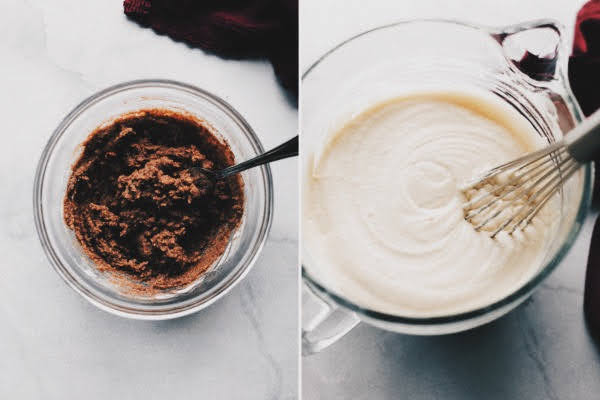

Cake sponge
Ingredients
- 3 and 2/3 cups cake flour
- 1 teaspoon salt
- 1 and 1/2 cups unsalted butter, softened to room temperature
- 1 and 2/3 cups granulated sugar
- 3 large eggs + 2 additional egg whites, at room temperature
- 3/4 teaspoon baking soda
- 1 teaspoon baking powder
- 1 Tablespoon pure vanilla extract
- 1 and 1/2 cups buttermilk, at room temperature
Instructions
Preheat oven to 350°F. Grease three 9-inch cake pans, line with parchment paper, then grease the parchment paper.
Make the cake: Whisk the cake flour, salt, baking powder, and baking soda together. Set aside.
Using a handheld or stand mixer fitted with a paddle or whisk attachment, beat the butter and sugar together on high speed until smooth and creamy, about 3 minutes. Beat in the 3 eggs, 2 egg whites, and vanilla extract on high speed until combined, about 2 minutes. (Mixture will look curdled as a result of the egg liquid and solid butter combining.) Scrape down the sides and up the bottom of the bowl as needed. With the mixer running on low speed, slowly add the dry ingredients. With the mixer still running on low speed, slowly pour in the buttermilk then mix just until combined. The batter will be slightly thick.
Pour batter evenly into cake pans. Set aside for a few minutes as you make the cinnamon swirl.